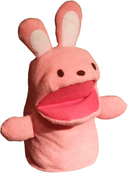

<!-- palindrom-bunny v2.0.0 | MIT License -->
<link rel="import" href="../polymer/polymer.html">
<dom-module id="palindrom-bunny">
    <style>
        #palindromAnim {
            width: 107px;
            height: 145px;
            position: fixed;
            left: 0;
            bottom: 125px;
        }

        #palindrom {
            width: 107px;
            height: 145px;
        }

        .mirrored {
            -webkit-transform: rotateY(180deg);
            transform: rotateY(180deg);
        }
    </style>
    <template>
        <div id="palindromAnim">
            
        </div>
    </template>
    <script>
        Polymer({
            is: 'palindrom-bunny',
            properties: {
                //0 .. 100
                direction: {
                    type: Number,
                    value: 1
                },
                height: {
                    type: Number,
                    value: 145
                },
                position: {
                    type: Number,
                    value: 0
                },
                step: {
                    type: Number,
                    value: 1
                },
                width: {
                    type: Number,
                    value: 107
                }
            },
            ready: function() {
                this.animateStep();
            },
            animateStep: function() {
                var that = this;
                window.requestAnimationFrame(function() {
                    var maxLeft = window.innerWidth - that.width;
                    that.position = that.position + that.step * that.direction;
                    var left = maxLeft * that.position / 100 + 'px';
                    var jumpLength = 4;
                    //1-20
                    var jumpHeight = 100;
                    //px
                    var bottom = Math.abs(jumpHeight * Math.sin(that.position / jumpLength)) + 'px';
                    that.$.palindromAnim.style.transform = 'translate(' + left + ', ' + bottom + ')';
                    that.$.palindromAnim.style.webkitTransform = that.$.palindromAnim.style.transform;
                    if (that.position >= 100 || that.position <= 0) {
                        that.direction = -that.direction;
                        if (that.direction > 0) {
                            that.$.palindrom.classList.remove('mirrored');
                        } else {
                            that.$.palindrom.classList.add('mirrored');
                        }
                    }
                    window.requestAnimationFrame(function() {
                        that.animateStep();
                    });
                });
            }
        });
    </script>
</dom-module>
